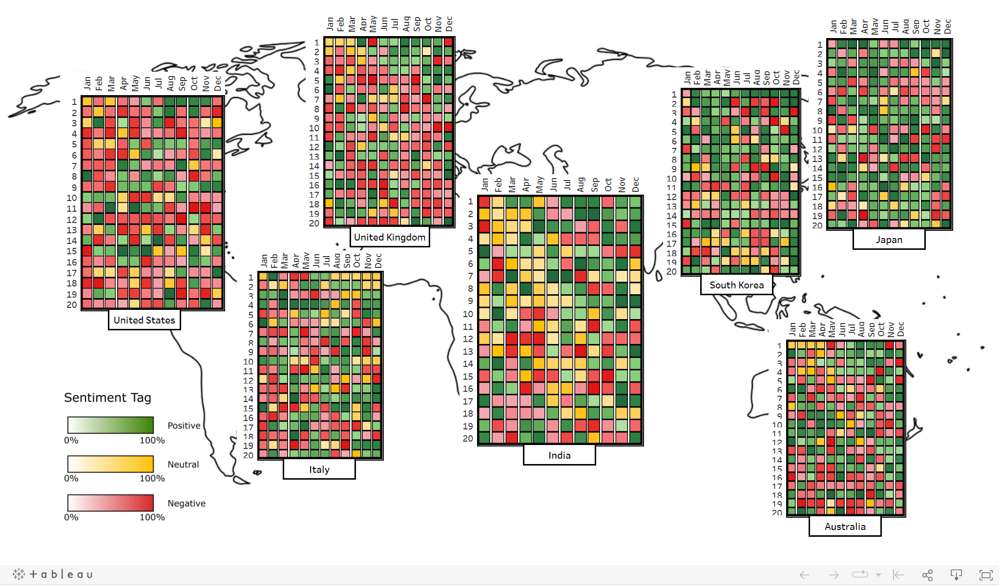
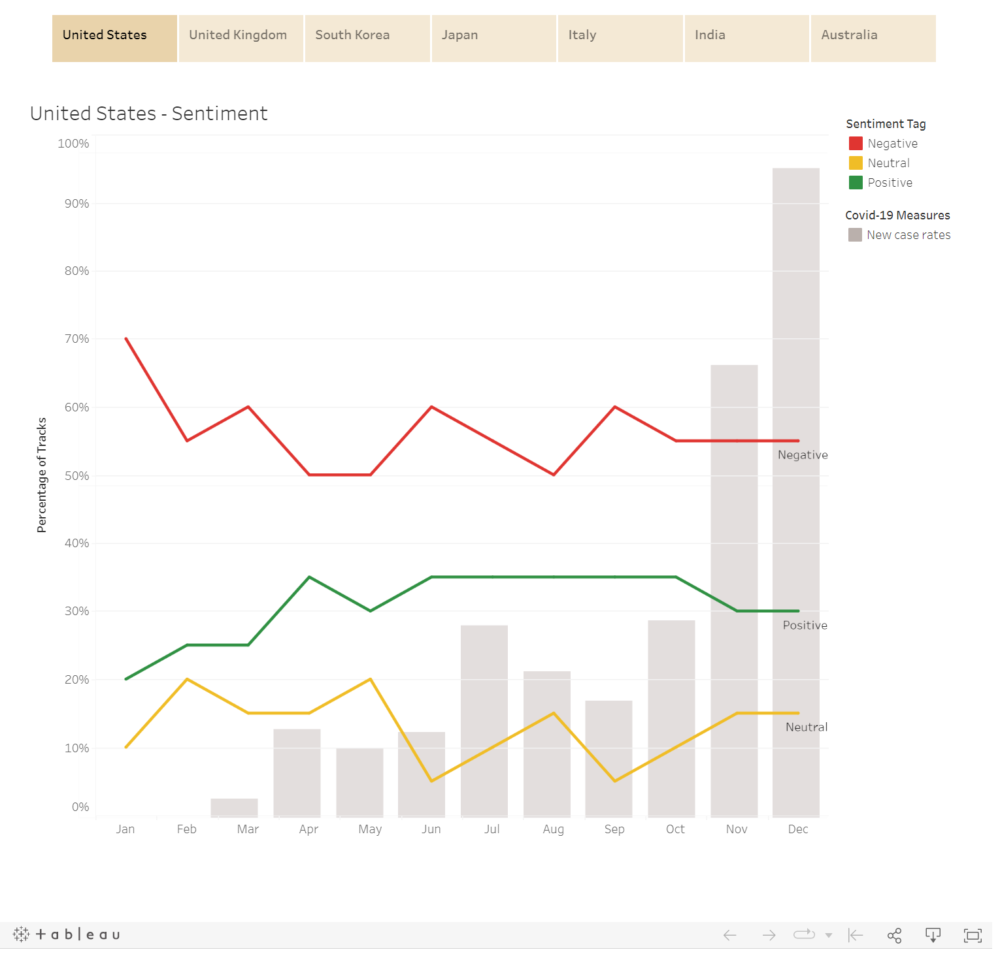
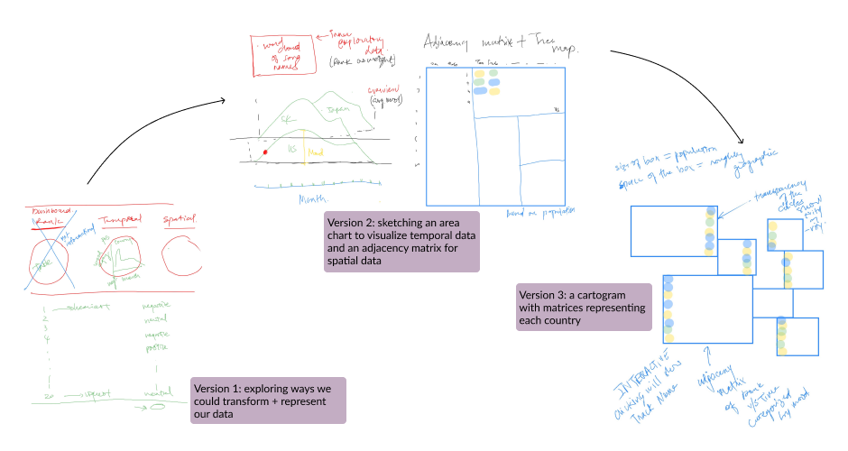

Data Visualization
A Musical Case Study of Public Sentiment in 2020
Can the lyrics of trending songs tell us something about how people were feeling during a global event?
Overview
This is a musical case study of public sentiment using the lyrics of the top 20 songs of each month ranked by the YouTube Music Charts. Through this project, we hope to understand whether popular music trends could be a useful indicator of public sentiments during a global event.
I wanted to use my understanding of data visualization principles to create an application that gives me insights into a topic of my interests while practicing interactive visualization authoring with Tableau.
The question
Inspired by personalized music playlists on Spotify, our data adventure starts with a wonder: what do music listening trends say about the listeners' emotions?
But there is so much to music — when we talk about music we can talk about its acoustic features like the key, tempo, and pitch; or we could talk about its instrumentation and how the combination of strings make it sound epic; or we could talk about the lyrics.
We performed an extensive background research on past and current studies on music sentiments. The majority of them focus on the acoustic properties of music and confirms that there exists correlation between the acoustic of music and the listener's sentiment. These findings sparked our interest: what about the lyrics?
So we rewrote our question: can we use lyrics from musical trends to analyze public sentiments, and how would we visualize it?
Visualization design
We had an hour-long brainstorming session on how we could transform the lyrics into numerical data and how we could present it in an informative and engaging way.
The entire project is made up of two Tableau dashboards — the map gives an overview of the sentiment for each of the seven countries, whereas the line and bar charts provide information on the correlation between different sentiments and severity of the pandemic (measured in new case rate).



Key takeaways
Keeping the scope manageable
We were ambitious in the very beginning — we envisioned a world map with data from at least ten countries covering all continents, using highly influential charts from the industry. However, we encountered limitations in the available dataset and resources. Realizing that we would have to manually compute the sentiment data from all lyrics (including non-English lyrics) and would need to pay to access major chart archives, my partner and I made the decision to narrow the scope to seven countries and the top 20 songs of each month.
With this decision, we were able to maintain a good balance between the size and quality of our project, delivering a product that is both rich in content and engaging in experience. I'll use this project as an example to guide my future work — don't be overly ambitious in the initial stage and always be realistic about the limitations you face in the process.
Be careful of the implications of design choices
One of the design challenges we encountered was picking colors for the three sentiment values — positive, neutral, and negative. We first went with blue, green, and red for the aesthetics; however, during informal usability testing, we found that our color choices were not intuitive. There was confusion about the association between colors and sentiments — some users saw green as positive and blue as neutral, the opposite of what we had assigned.
After rounds of iteration experimenting with different shades and combinations, we settled on particular shades of green, yellow, and red that are distinguishable across all opacity levels and visually pleasing. This process taught me that design often requires exploration between aesthetics and usability, and we really need to pay attention to the cultural and societal connotations of our design choices.